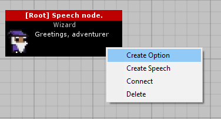

Video Tutorial.
This youtube video will be replaced with the tutorial when it is finished.
Written Tutorial.
Conversation Editor
In order to create a conversation, create a new GameObject and give it the script NPCConversation.
Open the editor window by selecting Window->DialogueEditor

Select your object with the script in the hierarchy to view this conversation in the editor window. A new conversation begins with a single Speech node.
Select a node to edit it. A speech node has the following variables:
- Dialogue: This is the speech for the node.
- Icon: This is the icon of the NPC that will appear next to the speech.
- Audio: This is an optional variable, you can play audio with this speech.
- TMP Font: This is the TextMeshPro font for this speech. You are able to set fonts on a node-by-node basis.
- Events: These are Unity Events that will run when this speech node in a conversation is played.

A speech node can have multiple options. These are the options the player can choose. Options can be created by right-clicking on the node and clicking "Create Option". Speech nodes can also be connected to pre-existing option nodes. This allows for branching and re-connecting conversation paths.
Option nodes have the following variables:
- Option Text: the text which appears in the option box.
- TMP Font: A custom font for this option.

Option nodes lead to a speech node. Selecting this option in-game will lead onto the connected speech node. You can either create a new speech node or connect an option to an existing speech-node by right-clicking on the option node.
Unwanted connections between nodes can be deleted by right-clicking on the arrow and clicking "Delete this connection"
Likewise, unwanted nodes can also be deleted by right-clicking on the ndoe and clicking "Delete this node". Deleting a node will also delete any connection to and from this node.

Conversation Manager + UI Prefab
todo
Callbacks
If you are using the ConversationManager UI Prefab, there are two callbacks you can use which are invoked when a conversation starts and ends, respectively.
DialogueEditor.ConversationManager.OnConversationStarted
DialogueEditor.ConversationManager.OnConversationEnded
Example use-case:
using UnityEngine;
using DialogueEditor;
public class ExampleClass : MonoBehaviour
{
private void OnEnable()
{
ConversationManager.OnConversationStarted += ConversationStart;
ConversationManager.OnConversationEnded += ConversationEnd;
}
private void OnDisable()
{
ConversationManager.OnConversationStarted -= ConversationStart;
ConversationManager.OnConversationEnded -= ConversationEnd;
}
private void ConversationStart()
{
Debug.Log("A conversation has began.");
}
private void ConversationEnd()
{
Debug.Log("A conversation has ended.");
}
}
Conversation datastructure
todo